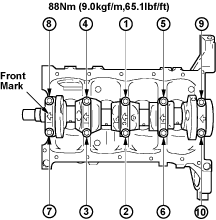

- Install the rotor (A) on the rear of crankshaft (B) and tighten screw (C).

- Apply an ample coat of engine oil to the crankshaft thrust bearings. Install the crankshaft thrust bearings to No. 2 crankshaft journal. The crankshaft thrust bearing oil groove must be facing the sliding face.

- Install the crankshaft bearing cap with the lower bearing.
NOTE:
- The bearing cap arrow marks must be facing the front of the engine.
- The arrow mark journal number must correspond to the journal to which the bearing cap is installed.

- Apply a coat of engine oil to the bearing cap bolts. Tighten the crankshaft bearing cap bolts to the specified torque a little at a time in the sequence shown in the illustration.
Crankshaft bearing cap torque:
88 Nm (9.0 kgf/m, 65.1 lbf/ft)
- Check to see that the crankshaft turns smoothly by rotating it manually.
- Clean sealing surface and remove liquid gasket residue.